צעד עשר
מדריך קצר בתמונות
חשבון נפש יומי בטלפון, בעברית, בחינם. הכול נשמר רק במכשיר שלכם, בלי חשבון ובלי שרת.
מה יש באפליקציה
מסך הבית וזמן נקי
בפתיחה הראשונה בוחרים שם, לשון פנייה (זכר או נקבה) ותאריך ניקיון. במסך הבית רואים כמה זמן אתם נקיים, וקישורים ל"רק להיום" וללוח הפגישות.
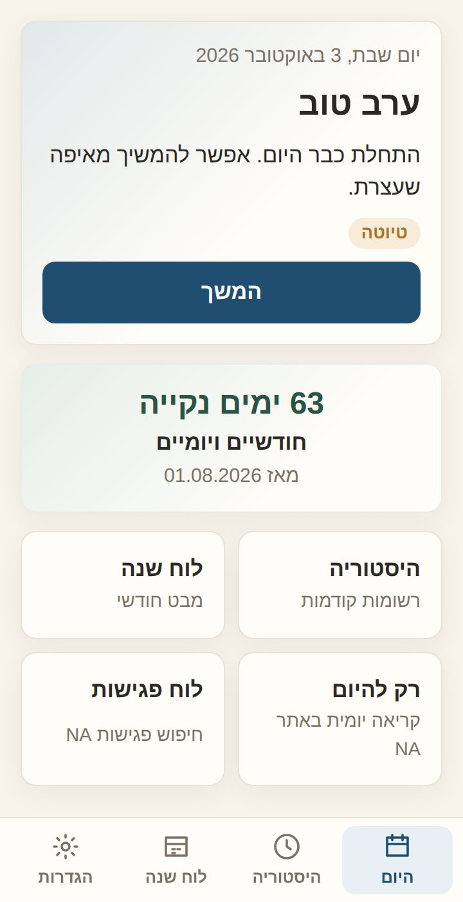
שאלות הדו"ח היומי
36 שאלות לחשבון נפש. כותבים, או מכתיבים עם סמל המיקרופון שבמקלדת. הכול נשמר אוטומטית. אפשר להוסיף, לערוך ולהסתיר שאלות, רק להיום או לתמיד.
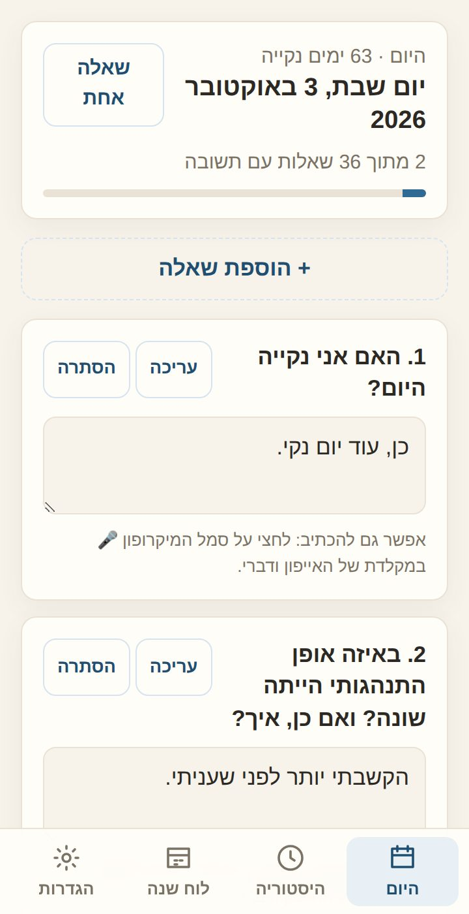
היסטוריה ולוח שנה
כל יום שמילאתם נשמר. בלוח השנה רואים בנקודה ירוקה ימים שהושלמו, ואפשר לחזור לכל יום, לקרוא אותו או להדפיס אותו כ-PDF.
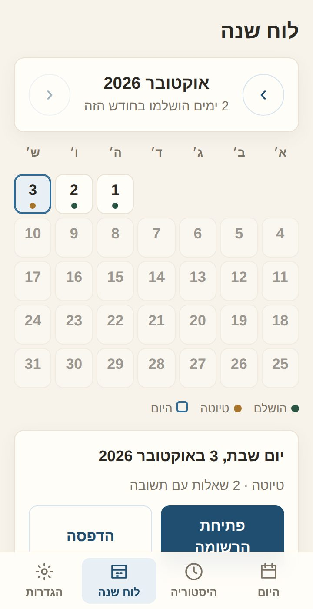
תזכורת וגיבוי
בהגדרות בוחרים שעה ומוסיפים תזכורת יומית ליומן של הטלפון. כדאי לגבות לקובץ מדי פעם, כי המידע נשמר רק במכשיר.
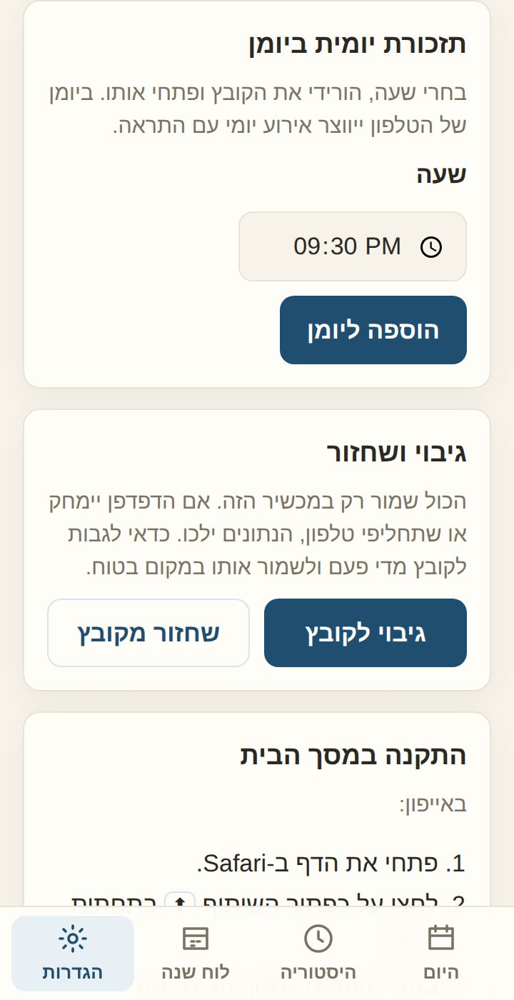
ברכה בימים מיוחדים
ב-30, 60 ו-90 יום, בחצי שנה, בשנה ובכל שנה, וגם ב-100 וב-1,000 ימים, מחכה לכם ברכה קטנה.
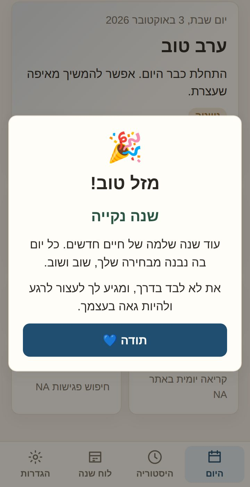
הוספה למסך הבית באייפון
חשוב: באייפון עושים את זה מתוך Safari.
1. פותחים את האתר ב-Safari
נכנסים לכתובת של האפליקציה.
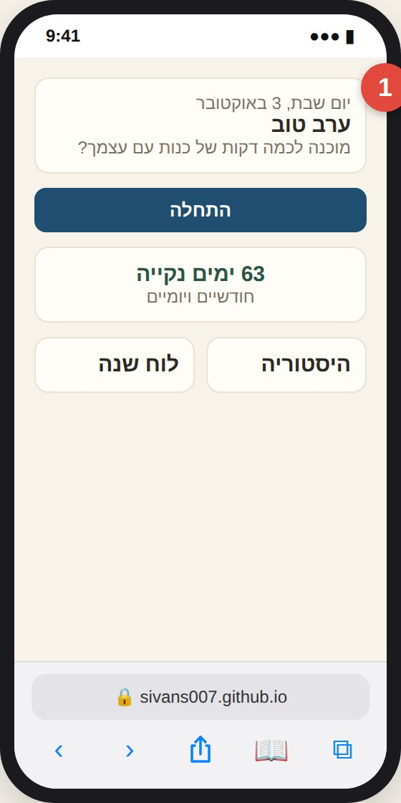
2. לוחצים על כפתור השיתוף
הריבוע עם החץ למעלה, בסרגל שבתחתית המסך. אם הסרגל לא מופיע, גוללים מעט למעלה.
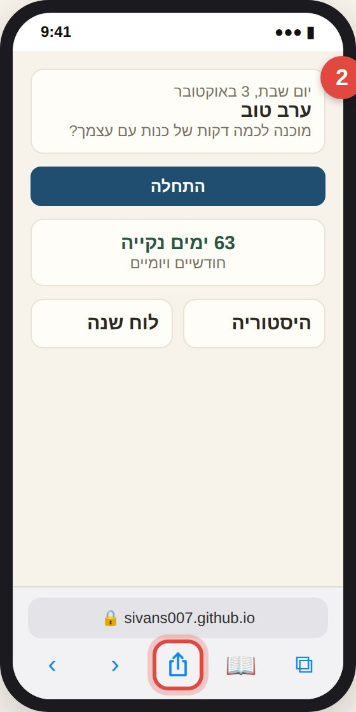
3. בוחרים "הוספה למסך הבית"
אם לא רואים את האפשרות, גוללים מטה ברשימה.
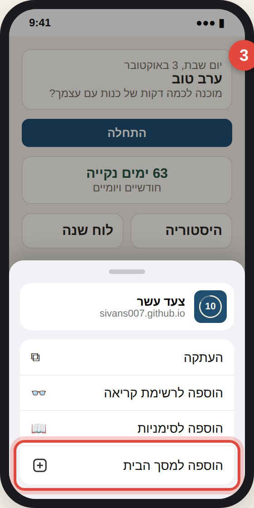
4. לוחצים "הוספה"
בפינה העליונה של המסך.
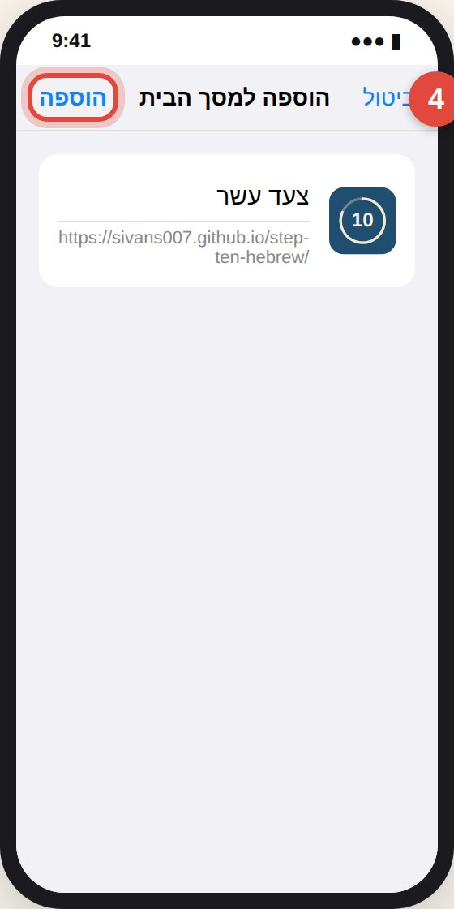
5. זהו!
הסמל של צעד עשר מופיע במסך הבית ונפתח כמו כל אפליקציה, גם בלי אינטרנט.

הוספה למסך הבית באנדרואיד
באנדרואיד עושים את זה מתוך Chrome. לפעמים Chrome מציע לבד "התקנת אפליקציה" בתחתית המסך, ואז אפשר פשוט ללחוץ עליו.
1. פותחים את האתר ב-Chrome
נכנסים לכתובת של האפליקציה.
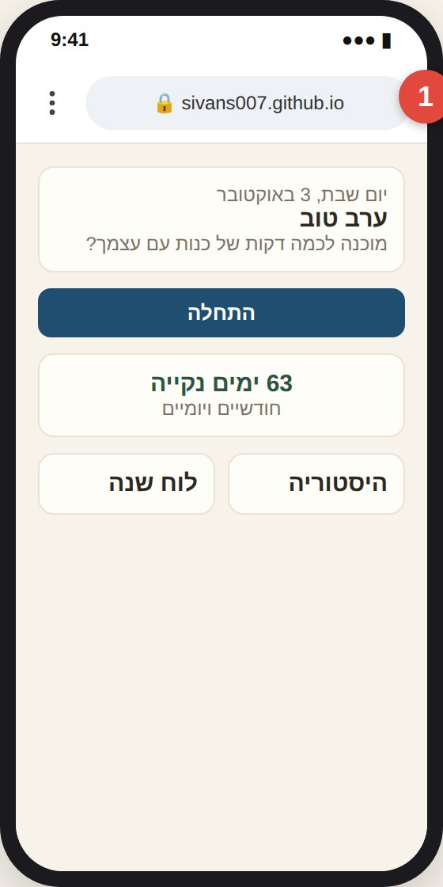
2. לוחצים על שלוש הנקודות
התפריט שבפינה העליונה, ליד שורת הכתובת.
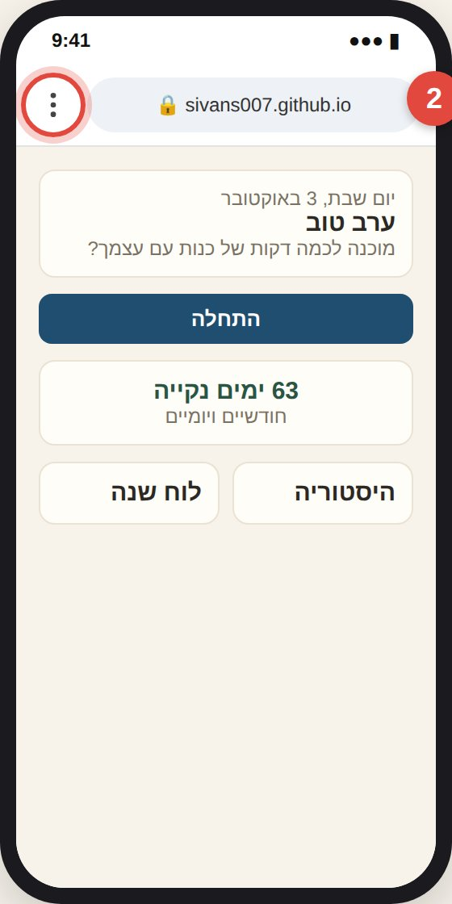
3. בוחרים "התקנת אפליקציה"
בחלק מהטלפונים זה נקרא "הוספה למסך הבית".
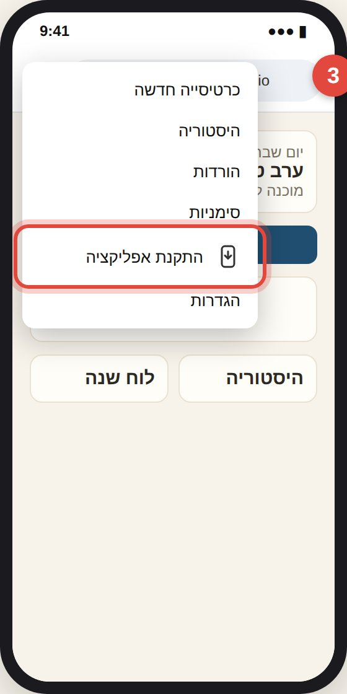
4. מאשרים "התקנה"
הטלפון מוסיף את האפליקציה.
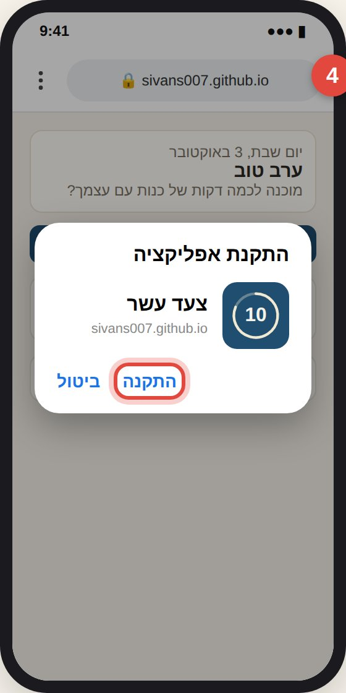
5. זהו!
הסמל של צעד עשר מופיע במסך הבית או ברשימת האפליקציות.
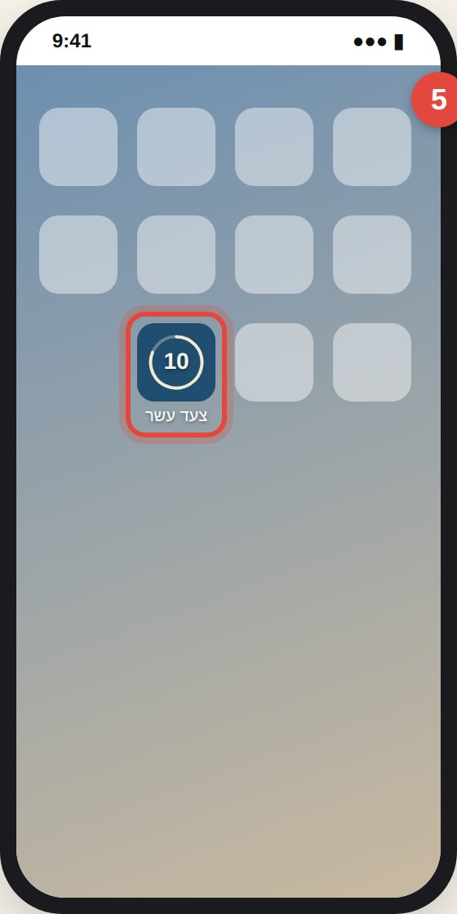
התמונות להמחשה בלבד. בגרסאות שונות של טלפונים המסכים עשויים להיראות קצת אחרת.
פרטיות
אין חשבון, אין שרת ואין מעקב. התשובות נשמרות רק בטלפון שלכם ולא נשלחות לשום מקום. אם מחליפים טלפון, משתמשים ב"גיבוי לקובץ" ו"שחזור מקובץ" שבהגדרות.